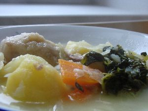

About Haukai Restaurant
Haukai Restaurant specialises in Māori kai and is based in the Bay of Islands. It was started by a couple who are keen on creating a business that would appeal to locals and tourists visiting the area.
Haukai Restaurant allows customers from all walks of life to experience real Te Ao Māori such as karakia or waiata.
Check out some of our traditional recipes below. Recipe Credit: Hunter from the Heartland by Cameron Petley.
Maori Bread
(Makes 1 loaf)
Ingredients
Batter
- 2 cups flour
- 2 tablespoons of yeast
- 1 cup of warm water
- 8 cups flour
- 2 tablespoons sugar
- 3 cups water
- 1 teaspoon salt
Directions
- Place pork bones and hock in a large stockpot. Pour in just enough water to cover bones and hock, season with salt and then gently simmer for 1½ hours. Add potatoes, kumara, pumpkin and kamokamo to the pot.
- Meanwhile, combine flour and baking powder and season with salt. Gradually add water to form a dough. Break off small bits of dough and form balls.
- Place watercress and doughboys on top of boil-up and cook until watercress is tender.
Boil Up
(Serves 4-6)
Ingredients
- 1kg wild pork bones
- 1 bacon hock
- salt
- 4 medium-sized potatoes, peeled and cubed
- 2 large kumara, peeled and cubed
- ½ pumpkin, peeled and cubed
- 4 kamokamo, peeled, de-seeded and cubed
- 1 cup flour
- 2 teaspoons baking powder
- ¼ cup water
- 1 large bunch watercress
Directions
- Place pork bones and hock in a large stockpot. Pour in just enough water to cover bones and hock, season with salt and then gently simmer for 1½ hours. Add potatoes, kumara, pumpkin and kamokamo to the pot.
- Meanwhile, combine flour and baking powder and season with salt. Gradually add water to form a dough. Break off small bits of dough and form balls.
- Place watercress and doughboys on top of boil-up and cook until watercress is tender.
Serve hot with Māori Bread.
Recipe Credit: Hunter from the Heartland by Cameron Petley.